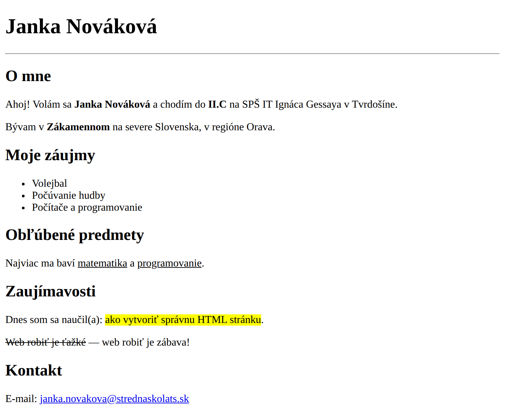

Minule sme písali HTML tagy priamo — dnes sa naučíme správnu kostru HTML dokumentu, naplníme ju obsahom a stránku vypublikujeme na internet.
03_tema (rovnako ako 01_tema a 02_tema).
Otvor svoj súbor rozcvicka.html z minulej hodiny (H02) vo VS Code. Potom v prehliadači otvor zdrojový kód stránky školy sstv.sk (Ctrl+U).
Porovnaj ich a odpovedz:
sstv.sk tagy <html>, <head>, <body>? Máš ich aj ty v rozcvicka.html?<head>? Nájdi tag <title> — kde v prehliadači vidíš jeho obsah?<!DOCTYPE html> na prvom riadku poznáš už z minula — je aj na sstv.sk?Záver: Čo tvojej rozcvičke chýba, aby bola úplný, správny HTML dokument?
a) Vytvor kostru. Vytvor nový prázdny súbor (Ctrl+N) a ulož ho ako moja-stranka.html do priečinka 03_tema. V prázdnom súbore napíš ! a stlač Tab — VS Code vygeneruje celú základnú schému.
Skontroluj, že máš všetky časti: <!DOCTYPE html> → <html> → <head> → <body>.
lang="en" a <title>Document</title>. Zmeň lang="en" na lang="sk" a do <title> napíš svoje meno.
b) Naplň stránku obsahom. Takto má vyzerať hotová stránka. Napíš do <body> HTML, ktoré vytvorí takýto výsledok — a údaje si prepíš na seba (meno, obec, záujmy, predmety… sú len ukážkové):

<h1> — hlavný nadpis (tvoje meno)<h2> — nadpis sekcie (O mne, Moje záujmy…)<hr> — vodorovná oddeľovacia čiara<p> — odsek (odstavec textu)<b> — tučné písmo<u> — podčiarknuté písmo<ul> a <li> — zoznam a jeho položky<mark> — zvýraznenie (ako zvýrazňovačom)<del> — prečiarknutý text<a> — odkaz (nový tag — pozri poznámku nižšie)ul>li*3 a stlač Tab. VS Code vygeneruje <ul> s tromi prázdnymi <li></li>.<a>: e-mail v kontakte je odkaz, ktorý sme ešte nepoužili. Napíšeš ho takto:
<a href="mailto:tvoj.email@strednaskolats.sk">tvoj.email@strednaskolats.sk</a>Atribút
href hovorí, kam odkaz vedie; mailto: na začiatku znamená, že po kliknutí sa otvorí e-mailový program.
Ulož (Ctrl+S) a otvor v prehliadači. Vidíš svoje meno v záložke aj na stránke?
<title><title> (napr. na „Môj prvý web").<title> zobrazuje? A kde NIE?<h1>?
<!DOCTYPE html>?DOCTYPE už máš na stránke z minula. Teraz vyskúšame, na čo vlastne je — a keďže stránka je už plná obsahu, uvidíš rozdiel:
<!DOCTYPE html> do <!-- ... -->F12) → záložka Console — vidíš nejaké upozornenie?charset)<head> máš <meta charset="UTF-8">. Zobrazuje sa tvoja diakritika (á, č, š, ô, ľ) správne?charset="UTF-8" na charset="ISO-8859-1". Ulož a obnov — čo sa stalo s dĺžňami a háčikmi?UTF-8.Záver: Prečo vždy píšeme charset="UTF-8"?
Do <head> pridaj tieto riadky a zisti, čo robia:
<meta name="description" content="Osobná stránka — Tvoje Meno">
<meta name="viewport" content="width=device-width, initial-scale=1">
<meta name="author" content="Tvoje Meno">
Teraz z tvojej stránky spravíme skutočný web dostupný z celého sveta. Postup poznáš z H02 (bonus) — zopakujeme ho:
03_tema, nie len jeden súbor — aby sa na GitHube zachovala rovnaká štruktúra ako u teba v počítači. Neskôr si ukážeme rýchlejší spôsob priamo z VS Code.
Nahraj svoju prácu do repozitára SS_PRX_IIC na GitHube — celý priečinok 03_tema (aj so súborom moja-stranka.html vnútri).
Add file → Upload files → presuň (drag & drop) celý priečinok 03_tema → dole Commit changes.
V repozitári klikni Settings → v ľavom menu Pages.
V časti Branch vyber main → Save.
Počkaj 1–2 minúty a obnov stránku. GitHub ti ukáže link, napr.
tvoj-username.github.io/SS_PRX_IIC/03_tema/moja-stranka.html
Otvor link v prehliadači — tvoja stránka je online! 🎉
index.html a dáš ho do koreňa repozitára, stránka sa otvorí priamo na tvoj-username.github.io/SS_PRX_IIC/ bez dlhej cesty.
Ak sa ti po zapnutí Pages otvoril len výpis priečinkov alebo dlhý odkaz, chýba ti vstupná stránka. GitHub Pages hľadá v koreni repozitára súbor s presným názvom index.html — ten sa otvorí ako prvý, keď niekto zadá adresu tvoj-username.github.io/SS_PRX_IIC/.
Spravíme z neho rozcestník — jednoduchú stránku s odkazom na tvoj osobný web (tag <a> už poznáš).
V repozitári SS_PRX_IIC (hneď v hlavnom adresári, nie v priečinku 03_tema) klikni Add file → Create new file.
Názov súboru napíš presne: index.html (malými písmenami).
Vlož túto kostru a prepíš si ju na seba:
<!DOCTYPE html> <html lang="sk"> <head> <meta charset="UTF-8"> <title>Moje stránky — tvoje meno</title> </head> <body> <h1>Moje stránky</h1> <p>Vitaj! Tu nájdeš moje práce z predmetu PRX.</p> <p><a href="03_tema/moja-stranka.html">Môj osobný web</a></p> </body> </html>
Dole klikni Commit changes. Počkaj 1–2 minúty a otvor tvoj-username.github.io/SS_PRX_IIC/ — mala by sa zobraziť tvoja vstupná stránka s odkazom na osobný web.
03_tema/moja-stranka.html musí presne sedieť s tým, ako sa volá tvoj priečinok a súbor v repozitári (veľké/malé písmená, pomlčky). Ak odkaz nefunguje, najčastejšie je to preklep v názve.
Každý poriadny projekt na GitHube má súbor README.md — krátky popis, ktorý sa zobrazuje priamo na stránke repozitára. Vytvor ho:
README.md# Moja osobná stránka — PRX II.C Toto je moja prvá webová stránka. Vytvoril(a) som ju na predmete PRX (Odborná prax), II.C, SPŠ IT Ignáca Gessaya v Tvrdošíne. ## Obsah - `03_tema/moja-stranka.html` — osobný web (o mne, záujmy, kontakt) ## Živá stránka https://tvoj-username.github.io/SS_PRX_IIC/03_tema/moja-stranka.html ## Čo som sa naučil(a) - základnú schému HTML dokumentu (DOCTYPE, html, head, body) - význam <title>, charset="UTF-8" a lang="sk" - publikovanie stránky cez GitHub Pages
3. Dole klikni Commit changes. Hotovo — tvoj repozitár má vizitku!
.md je Markdown — jednoduchý formát na písanie textu. # je nadpis, - je odrážka. GitHub ho pekne zobrazí.